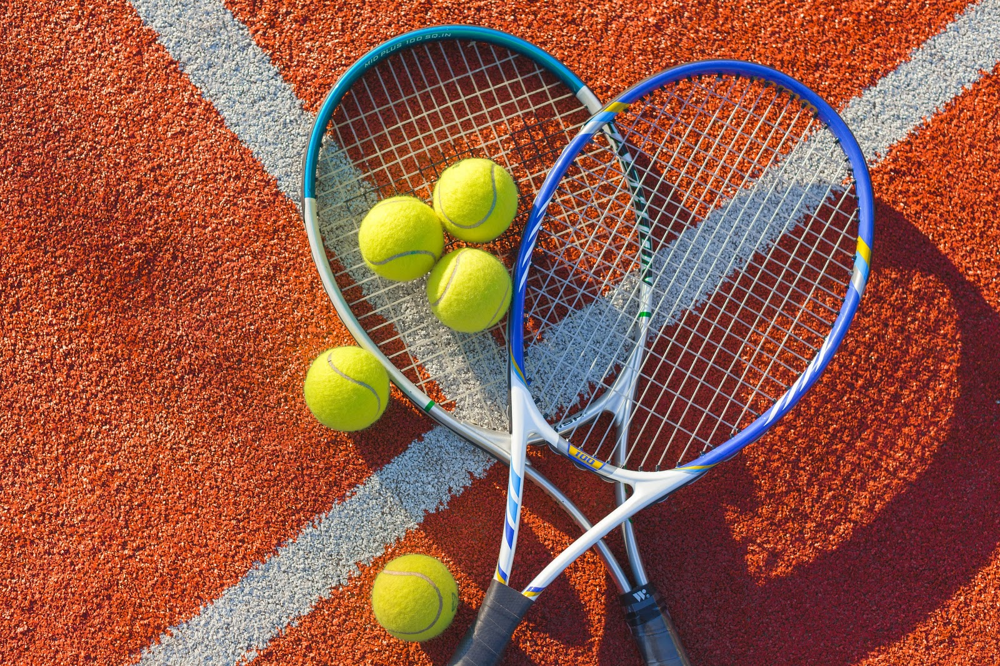
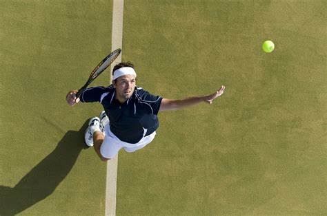

Tenis
Soupeři stojí proti sobě, na obdélníkovém hřišti
(tenisovém dvorci) a pokoušejí se odrazit tenisový míček
tenisovou raketou do pole tak, aby jej soupeř nemohl vrátit nebo
aby se míčkem trefil vedle tenisového dvorce (do autu).
Tenis patří k olympijskýmsportům. Z tenisu se vyvinulo několik
podobných sportů hraných zejména pod střechou na speciálním
kurtu např.: plážový tenis.
Charakteristika hry
Tenis je velmi elegantní míčová hra, kterou mohou hrát dva
nebo hráči. Ke hře je zapotřebí tenisová raketa, míček,
tenisový dvorec a tenisová síť. Hráči tenisu mohou být
jakéhokoliv věku, výšky, váhy či pohlaví. Avšak na
profesionální úrovni hrají muži a ženy zvlášť, výjimku však
tvoří turnaje, kde proti sobě ve čtyřhře nastoupí muž i žena
na každé straně. Této čtyřhře se říká „smíšená čtyřhra“ nebo
„mix“. Hlavním úkolem jeco nejlépe vrátit míč na soupeřovu
polovinu dvorce tak, aby ho soupeř vůbec nezahrál či nedoběhl,
případně aby mu vrácení míče dělalo potíže. Ve srovnání s
jinými sporty se tenis hraje se střední intenzitou. Zápas
může trvat desítky minut, ale taky klidně několik hodin.


- cokoliv
- cokoliv
- cokoliv
- cokoliv
- cokoliv
Tenis
Jezevec